Learn iOS apprentice in 10 days
Jul 3, 2019
什么是iOS apprentice？
在完成了上一个任务之后，我总算迎来了又一个更加巨大的挑战，这次直接换了一个新的平台：iOS。我从来没有接触过iOS的编程，之前只是听说过Swift和Cocoa Touch，但是Xcode完全没有用过。于是经过一番上网查找，我发现了一个非常适合新手入门的教材： raywenderlich的iOS apprentice！
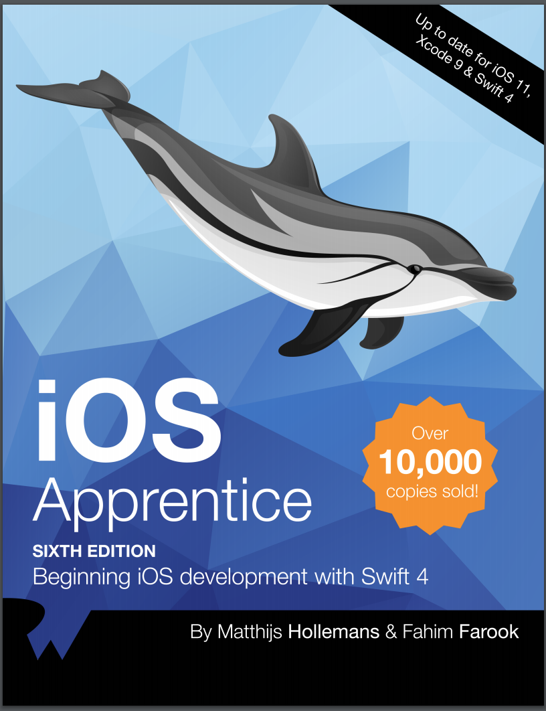他总共包括四个部分，每一个部分教你编写一个app，难度从低到高。
第一个app: Bull's Eye
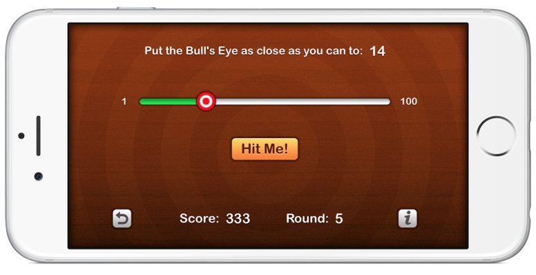 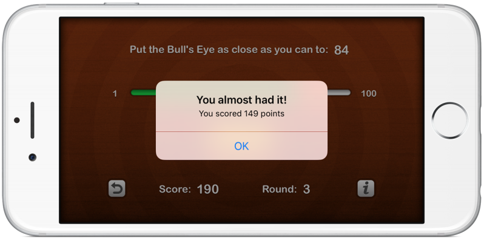从怎么样创建一个新的single view app说起，非常容易上手
- 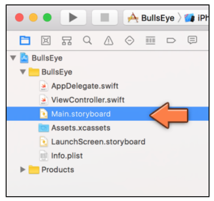Project Navigator
- 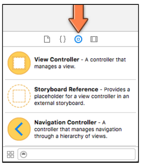Obejct Library
- 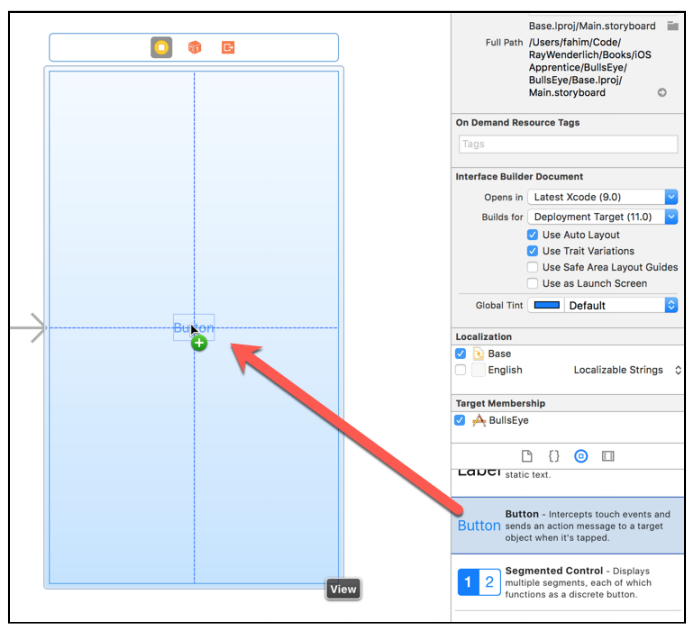Drag item to view
- 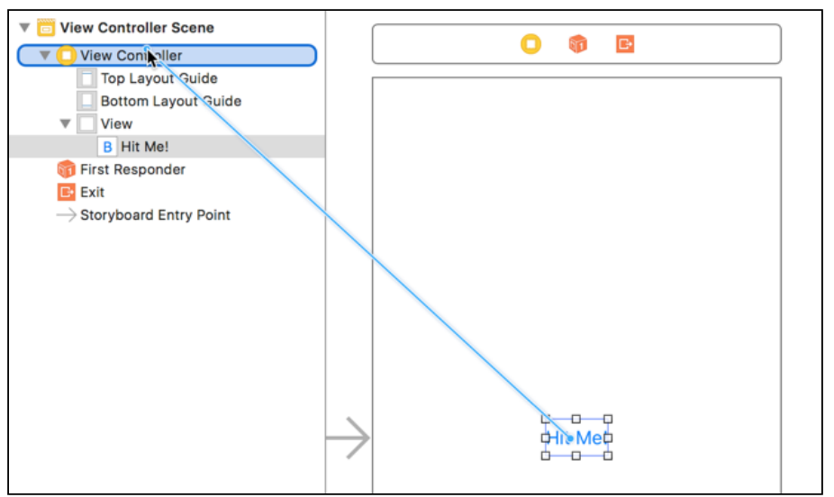Make connections from object item to View Controller
- 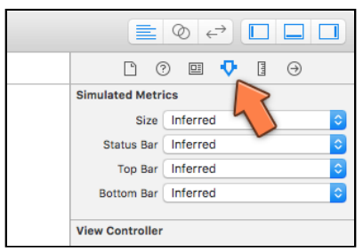Attributes Inspector
- 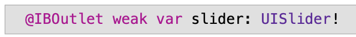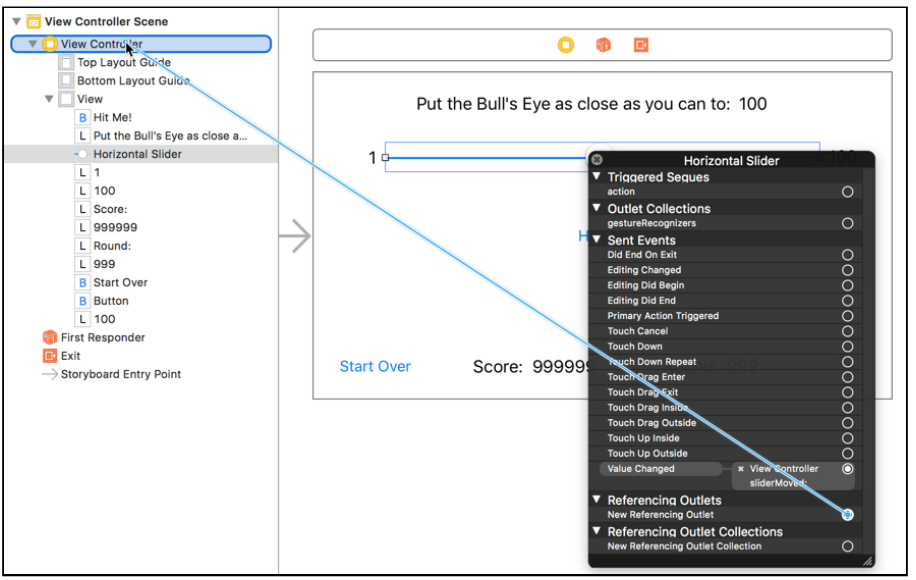Item Outlet
- 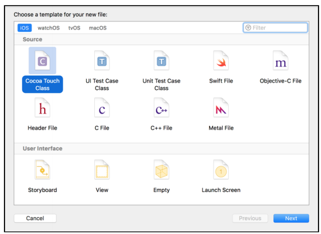Another view controller
- 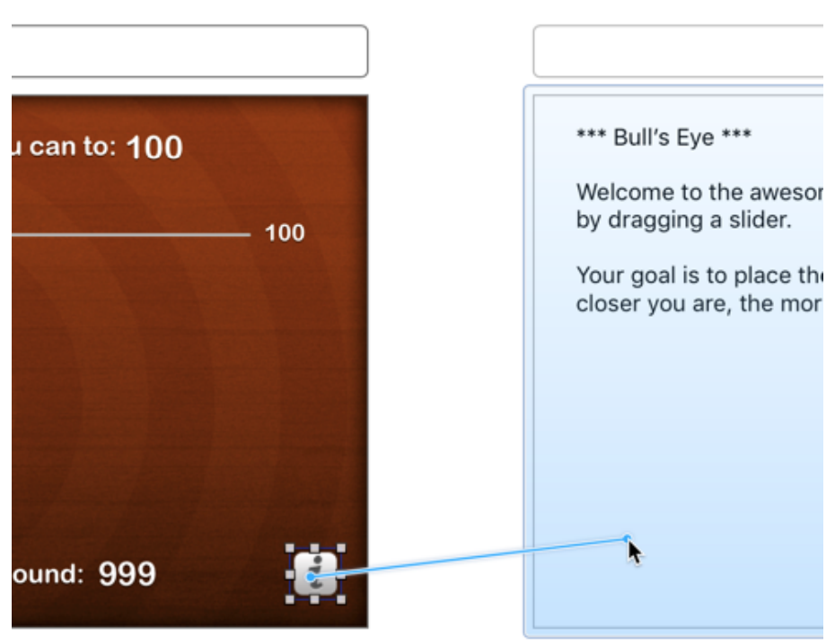Segue
- 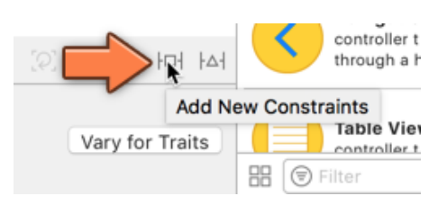Add Constraints
第一个app基本上解决了很多界面上的问题，storyboard和editor之前的交流也讲了很多，@IBAction， @IBOutlet，segue等等一切都有涉及。之后第二个app就会更深层次的接触到iOS特有的模式了，比如delegate，还有一切经典的design pattern，比如MVC